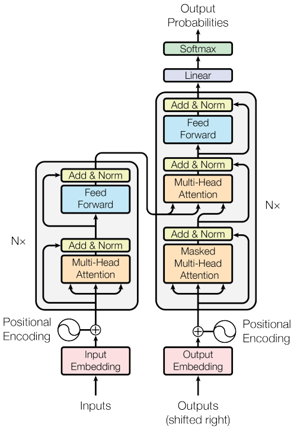
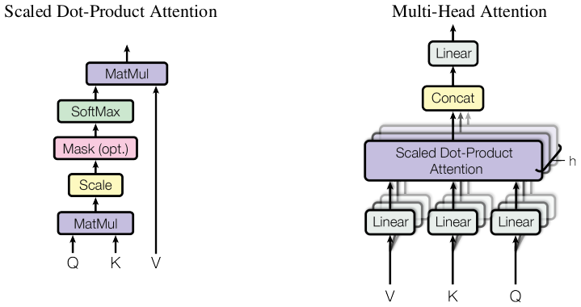
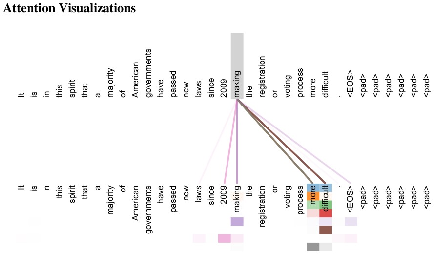
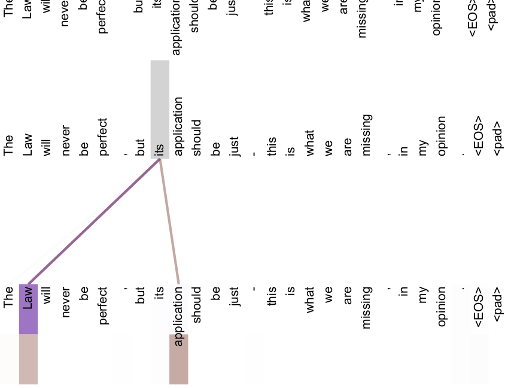
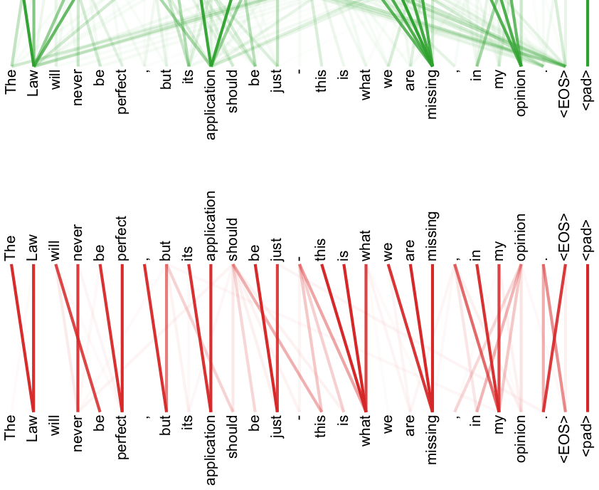

中文导读译自 arXiv:1706.03762（对照 英文 PDF）。术语与第 15、16 课对齐；图表未嵌入。
你只需要注意力
目前主流的序列转导（sequence transduction）模型，多以复杂的循环或卷积神经网络构成编码器—解码器；表现最好的模型还会用注意力连接两端。我们提出一种更简单的架构——Transformer：完全依赖注意力，不再使用循环与卷积。在两个机器翻译任务上，它质量更高、更易并行，训练时间也明显更短。在 WMT 2014 英→德上达到 28.4 BLEU，比此前最佳结果（含模型集成）高出 2 个 BLEU 以上；在 WMT 2014 英→法上，用 8 块 GPU 训练约 3.5 天后，单模型达到 41.8 BLEU，训练代价远低于文献中的最佳模型。我们还把 Transformer 用到英语成分句法分析（大数据与小数据设定），说明它也能泛化到其他任务。
循环神经网络，尤其是 LSTM [13] 与门控循环网络 [7]，长期是序列建模与转导（语言建模、机器翻译等 [35, 2, 5]）的主流方法。随后大量工作继续推进循环语言模型与编码器—解码器 [38, 24, 15]。
循环模型通常按符号位置逐步计算：把位置与时间步对齐，隐藏状态 \(h_t\) 依赖 \(h_{t-1}\) 与当前位置输入。这种固有顺序性妨碍单条样本内部的并行；序列一长，显存又限制跨样本批大小，问题更突出。虽有分解技巧 [21]、条件计算 [32] 等提速手段，顺序依赖这一根本约束仍在。
注意力已几乎成为序列建模与转导模型的标配，可在不考虑距离的情况下建模依赖 [2, 19]。但除少数工作 [27] 外，注意力仍多与循环网络联用。
本文提出 Transformer：去掉循环，完全靠注意力刻画输入与输出之间的全局依赖。它更易并行；在 8 块 P100 上训练约 12 小时即可达到新的翻译 SOTA。
减少顺序计算的目标也构成了 Extended Neural GPU [16]、ByteNet [18] 和 ConvS2S [9] 的基础，它们都使用卷积神经网络作为基本构建块，为所有输入和输出位置并行计算隐藏表示。在这些模型中，关联两个任意输入或输出位置信号所需的操作数随位置距离增长：ConvS2S 为线性，ByteNet 为对数。这使学习远距离位置之间的依赖更加困难 [12]。在 Transformer 中，这被减少为常数数量的操作，尽管代价是由于对注意力加权位置取平均而降低有效分辨率；我们通过第 3.2 节描述的多头注意力来抵消这一影响。
自注意力（有时称为内部注意力）是一种将单个序列的不同位置关联起来以计算序列表示的注意力机制。自注意力已成功用于多种任务，包括阅读理解、抽象摘要、文本蕴涵和学习任务无关的句子表示 [4, 27, 28, 22]。
端到端记忆网络基于循环注意力机制而非序列对齐的循环，并已被证明在简单语言问答和语言建模任务上表现良好 [34]。
据我们所知，Transformer 是第一个完全依赖自注意力来计算其输入和输出表示、而不使用序列对齐 RNN 或卷积的转换模型。以下各节中，我们将描述 Transformer，说明自注意力的动机，并讨论其相对于 [17, 18] 和 [9] 等模型的优势。
大多数有竞争力的神经序列转换模型具有编码器—解码器结构 [5, 2, 35]。这里，编码器将输入符号表示序列 \((x_1,\ldots,x_n)\) 映射为连续表示序列 \(\mathbf{z}=(z_1,\ldots,z_n)\)。给定 \(\mathbf{z}\)，解码器随后一次一个元素地生成输出符号序列 \((y_1,\ldots,y_m)\)。每一步模型都是自回归的 [10]，在生成下一个符号时将先前生成的符号作为额外输入。

Transformer 遵循这一整体架构，对编码器和解码器都使用堆叠的自注意力和逐位置全连接层，分别如图 1 左半部分和右半部分所示。
编码器：编码器由 \(N=6\) 个相同层堆叠组成。每层有两个子层。第一层是多头自注意力机制，第二层是简单的逐位置全连接前馈网络。我们在两个子层周围都采用残差连接 [11]，然后进行层归一化 [1]。也就是说，每个子层的输出为 \(\mathrm{LayerNorm}(x+\mathrm{Sublayer}(x))\)，其中 \(\mathrm{Sublayer}(x)\) 是子层本身实现的函数。为便于这些残差连接，模型中所有子层以及嵌入层都产生维度 \(d_{\mathrm{model}}=512\) 的输出。
解码器：解码器也由 \(N=6\) 个相同层堆叠组成。除每个编码器层中的两个子层外，解码器还插入第三个子层，对编码器堆栈的输出执行多头注意力。与编码器类似，我们在每个子层周围采用残差连接，然后进行层归一化。我们还修改解码器堆栈中的自注意力子层，以防止位置关注后续位置。这种掩蔽，加上输出嵌入偏移一个位置，确保位置 \(i\) 的预测只能依赖于小于 \(i\) 的位置的已知输出。
注意力函数可以描述为将查询和一组键—值对映射到输出，其中查询、键、值和输出都是向量。输出计算为值的加权和，其中分配给每个值的权重由查询与相应键的兼容性函数计算。

我们采用的具体形式称为「缩放点积注意力」（图 2）。输入为维度 \(d_k\) 的查询与键，以及维度 \(d_v\) 的值：先算查询与各键的点积，再除以 \(\sqrt{d_k}\)，经 softmax 得到对值的权重。
实现上把一组查询排成矩阵 \(Q\)，键、值排成 \(K\)、\(V\)，输出为：
两种最常用的注意力函数是加性注意力 [2] 和点积（乘性）注意力。除缩放因子 \(\frac{1}{\sqrt{d_k}}\) 外，点积注意力与我们的算法相同。加性注意力使用带单个隐藏层的前馈网络计算兼容性函数。虽然二者理论复杂度相似，但点积注意力在实践中快得多且更节省空间，因为它可以使用高度优化的矩阵乘法代码实现。
对于较小的 \(d_k\)，两种机制表现相似；但对于较大的 \(d_k\)，不加缩放的加性注意力优于点积注意力 [3]。我们怀疑对于较大的 \(d_k\)，点积幅度变大，将 softmax 函数推入梯度极小的区域4。为抵消这一影响，我们将点积乘以 \(\frac{1}{\sqrt{d_k}}\)。
与其在完整的 \(d_{\mathrm{model}}\) 维上只做一次注意力，我们发现更有效的做法是：用 \(h\) 组不同的可学习线性投影，把查询、键、值分别投到 \(d_k\)、\(d_k\)、\(d_v\) 维，再在投影后的空间上并行做注意力，得到 \(h\) 组 \(d_v\) 维输出；拼接后再经一次投影，即为最终结果（图 2）。
多头注意力让模型能同时从不同表示子空间、在不同位置上取信息；单头时，平均往往会抹掉这种分工。
其中投影为参数矩阵 \(W_i^Q\in\mathbb{R}^{d_{\mathrm{model}}\times d_k}\)、\(W_i^K\in\mathbb{R}^{d_{\mathrm{model}}\times d_k}\)、\(W_i^V\in\mathbb{R}^{d_{\mathrm{model}}\times d_v}\) 和 \(W^O\in\mathbb{R}^{hd_v\times d_{\mathrm{model}}}\)。
在这项工作中，我们采用 \(h=8\) 个并行注意力层或头。对于每个头，我们使用 \(d_k=d_v=d_{\mathrm{model}}/h=64\)。由于每个头的维度降低，总计算成本与全维度的单头注意力相似。
Transformer 以三种不同方式使用多头注意力：
除注意力子层外，编码器和解码器中的每一层还包含一个全连接前馈网络，它分别且相同地应用于每个位置。这由两个线性变换和中间的 ReLU 激活组成。
虽然线性变换在不同位置相同，但它们在层与层之间使用不同参数。另一种描述方式是将其视为两个核大小为 1 的卷积。输入和输出维度为 \(d_{\mathrm{model}}=512\)，内层维度为 \(d_{ff}=2048\)。
与其他序列转换模型类似，我们使用学习到的嵌入将输入标记和输出标记转换为维度 \(d_{\mathrm{model}}\) 的向量。我们还使用通常的学习线性变换和 softmax 函数将解码器输出转换为预测的下一个标记概率。在我们的模型中，我们在两个嵌入层和 pre-softmax 线性变换之间共享相同权重矩阵，类似于 [30]。在嵌入层中，我们将这些权重乘以 \(\sqrt{d_{\mathrm{model}}}\)。
| 层类型 | 每层复杂度 | 顺序操作 | 最大路径长度 |
|---|---|---|---|
| 自注意力 | \(O(n^2\cdot d)\) | \(O(1)\) | \(O(1)\) |
| 循环 | \(O(n\cdot d^2)\) | \(O(n)\) | \(O(n)\) |
| 卷积 | \(O(k\cdot n\cdot d^2)\) | \(O(1)\) | \(O(\log_k(n))\) |
| 自注意力（受限） | \(O(r\cdot n\cdot d)\) | \(O(1)\) | \(O(n/r)\) |
由于我们的模型不含循环也不含卷积，为使模型利用序列顺序，我们必须注入关于标记在序列中相对或绝对位置的信息。为此，我们在编码器和解码器堆栈底部的输入嵌入中添加“位置编码”。位置编码与嵌入具有相同维度 \(d_{\mathrm{model}}\)，因此二者可以相加。位置编码有许多选择，包括学习和固定的 [9]。
在这项工作中，我们使用不同频率的正弦和余弦函数：
其中 \(pos\) 是位置，\(i\) 是维度。也就是说，位置编码的每个维度对应一个正弦波。波长形成从 \(2\pi\) 到 \(10000\cdot2\pi\) 的几何级数。我们选择这个函数，是因为我们假设它能让模型容易学习按相对位置关注，因为对于任何固定偏移 \(k\)，\(PE_{pos+k}\) 可以表示为 \(PE_{pos}\) 的线性函数。
我们也实验了使用学习的位置嵌入 [9]，发现两个版本产生几乎相同的结果（见表 3 行 (E)）。我们选择正弦版本，因为它可能允许模型外推到比训练中遇到的更长的序列长度。
本节把自注意力与常把变长表示序列 \((x_1,\ldots,x_n)\) 映到等长序列 \((z_1,\ldots,z_n)\)（\(x_i,z_i\in\mathbb{R}^d\)）的循环层、卷积层作对比。选用自注意力时，我们主要看三点：
（1）每层总计算复杂度；（2）可并行度，用最少顺序操作数衡量；（3）长程依赖的路径长度——信号在网络里要走过的路径越短，越容易学到远距离依赖 [12]。据此比较不同层类型下，任意输入/输出位置对之间的最大路径长度。
如表 1 所示，自注意力层用常数数量的顺序执行操作连接所有位置，而循环层需要 \(O(n)\) 个顺序操作。在计算复杂度方面，当序列长度 \(n\) 小于表示维度 \(d\) 时，自注意力层比循环层更快，这在机器翻译中最先进模型使用的句子表示（如 word-piece [38] 和 byte-pair [31] 表示）中通常如此。为提高涉及非常长序列的任务的计算性能，可以将自注意力限制为只考虑输入序列中以相应输出位置为中心、大小为 \(r\) 的邻域。这将最大路径长度增加到 \(O(n/r)\)。我们计划在未来工作中进一步研究这种方法。
核宽度 \(k 作为附带好处，自注意力可以产生更具可解释性的模型。我们检查模型中的注意力分布，并在附录中展示和讨论示例。不仅单个注意力头明显学会执行不同任务，许多头似乎表现出与句子句法和语义结构相关的行为。 本节描述我们模型的训练方案。 我们在标准 WMT 2014 英德数据集上训练，该数据集包含约 450 万句对。句子使用 byte-pair 编码 [3] 编码，其共享源—目标词表约 37000 个标记。对于英法，我们使用显著更大的 WMT 2014 英法数据集，包含 3600 万句子，并将标记切分为 32000 个 word-piece 词表 [38]。句子对按近似序列长度分批。每个训练批次包含一组句子对，约含 25000 个源标记和 25000 个目标标记。 我们在一台配备 8 块 NVIDIA P100 GPU 的机器上训练模型。对于使用本文所述超参数的 base 模型，每个训练步约需 0.4 秒。base 模型总共训练 100,000 步，即 12 小时。对于 big 模型（表 3 底行描述），每步时间 1.0 秒。big 模型训练 300,000 步（3.5 天）。 我们使用 Adam 优化器 [20]，\(\beta_1=0.9\)、\(\beta_2=0.98\)、\(\epsilon=10^{-9}\)。我们在训练过程中按以下公式改变学习率： 这对应于在前 warmup 个训练步中线性增加学习率，之后按步数平方根的倒数成比例降低。我们使用 warmup steps = 4000。 训练期间我们采用三种正则化： 残差 Dropout：我们对每个子层的输出应用 dropout [33]，然后将其加到子层输入并归一化。此外，我们对编码器和解码器堆栈中嵌入与位置编码之和应用 dropout。对于 base 模型，我们使用速率 \(P_{drop}=0.1\)。 标签平滑：训练期间，我们采用值 \(\epsilon_{ls}=0.1\) 的标签平滑 [36]。这会损害困惑度，因为模型学会更不确定，但会提高准确率和 BLEU 分数。 在 WMT 2014 英德翻译任务上，big Transformer 模型（表 2 中 Transformer (big)）比先前报告的最佳模型（包括集成）高出超过 2.0 BLEU，建立了新的最先进 BLEU 分数 28.4。该模型配置列于表 3 底行。在 8 块 P100 GPU 上训练耗时 3.5 天。即使我们的 base 模型也超过所有先前发表的模型和集成，而训练成本仅为任何竞争模型的一小部分。 在 WMT 2014 英法翻译任务上，我们的 big 模型取得 BLEU 分数 41.0，超过所有先前发表的单模型，训练成本不到先前最先进模型的 \(1/4\)。用于英法的 Transformer (big) 模型使用 dropout 率 \(P_{drop}=0.1\)，而不是 0.3。 对于 base 模型，我们使用对最后 5 个检查点（每 10 分钟写入）取平均得到的单个模型。对于 big 模型，我们对最后 20 个检查点取平均。我们使用束大小 4、长度惩罚 \(\alpha=0.6\) 的束搜索 [38]。这些超参数是在开发集上实验后选择的。我们将推理时最大输出长度设为输入长度 \(+50\)，但在可能时提前终止 [38]。 表 2 总结我们的结果，并将翻译质量和训练成本与文献中其他模型架构比较。我们通过将训练时间、使用的 GPU 数量以及每块 GPU 持续单精度浮点容量估计相乘，来估计训练模型使用的浮点操作数5。 为评估 Transformer 不同组件的重要性，我们以不同方式改变 base 模型，测量英德翻译在开发集 newstest2013 上的性能变化。我们使用上一节描述的束搜索，但不使用检查点平均。结果见表 3。 在表 3 行 (A) 中，我们在保持计算量不变的情况下改变注意力头数量以及注意力键和值维度，如第 3.2.2 节所述。单头注意力比最佳设置差 0.9 BLEU，但头太多时质量也会下降。 在表 3 行 (B) 中，我们观察到减小注意力键大小 \(d_k\) 会损害模型质量。这表明确定兼容性并不容易，比点积更复杂的兼容性函数可能有益。我们在行 (C) 和 (D) 中进一步观察到，如预期，更大的模型更好，dropout 对避免过拟合非常有帮助。在行 (E) 中，我们用学习的位置嵌入 [9] 替换正弦位置编码，观察到与 base 模型几乎相同的结果。 为评估 Transformer 能否泛化到其他任务，我们在英语成分句法分析上进行了实验。该任务带来特定挑战：输出受强结构约束，且显著长于输入。此外，RNN 序列到序列模型在小数据情形下未能达到最先进结果 [37]。 我们在 Penn Treebank [25] 的 Wall Street Journal（WSJ）部分训练了一个 \(d_{model}=1024\) 的 4 层 Transformer，约 40K 训练句子。我们还在半监督设置中训练它，使用来自约 17M 句子的更大高置信度和 BerkleyParker 语料 [37]。仅 WSJ 设置使用 16K 标记词表，半监督设置使用 32K 标记词表。 我们只进行了少量实验，在第 22 节开发集上选择 dropout（注意力和残差，见第 5.4 节）、学习率和束大小，所有其他参数与英德 base 翻译模型保持不变。推理时，我们将最大输出长度增加到输入长度 \(+300\)。对于仅 WSJ 和半监督设置，我们使用束大小 21 和 \(\alpha=0.3\)。 表 4 的结果表明，尽管缺乏任务特定调优，我们的模型表现得出奇地好，优于所有先前报告的模型，例外是 Recurrent Neural Network Grammar [8]。 与 RNN 序列到序列模型 [37] 相反，即使仅在 40K 句子的 WSJ 训练集上训练，Transformer 也优于 Berkeley-Parser [29]。 在这项工作中，我们提出了 Transformer，这是第一个完全基于注意力的序列转换模型，用多头自注意力替换了编码器—解码器架构中最常用的循环层。 对于翻译任务，Transformer 的训练速度显著快于基于循环或卷积层的架构。在 WMT 2014 英德和 WMT 2014 英法翻译任务上，我们都达到了新的最先进水平。在前一个任务中，我们的最佳模型甚至超过了所有先前报告的集成。 我们对基于注意力的模型的未来感到兴奋，并计划将其应用于其他任务。我们计划将 Transformer 扩展到涉及文本以外输入和输出模态的问题，并研究局部、受限注意力机制，以高效处理图像、音频和视频等大型输入和输出。使生成过程更少顺序性也是我们的另一个研究目标。 我们用于训练和评估模型的代码可在 https://github.com/tensorflow/tensor2tensor 获取。 我们感谢 Nal Kalchbrenner 和 Stephan Gouws 富有成果的评论、纠正和启发。 [1] Jimmy Lei Ba, Jamie Ryan Kiros, and Geoffrey E Hinton. Layer normalization. arXiv preprint arXiv:1607.06450, 2016. [2] Dzmitry Bahdanau, Kyunghyun Cho, and Yoshua Bengio. Neural machine translation by jointly learning to align and translate. CoRR, abs/1409.0473, 2014. [3] Denny Britz, Anna Goldie, Minh-Thang Luong, and Quoc V. Le. Massive exploration of neural machine translation architectures. CoRR, abs/1703.03906, 2017. [4] Jianpeng Cheng, Li Dong, and Mirella Lapata. Long short-term memory-networks for machine reading. arXiv preprint arXiv:1601.06733, 2016. [5] Kyunghyun Cho, Bart van Merrienboer, Caglar Gulcehre, Fethi Bougares, Holger Schwenk, and Yoshua Bengio. Learning phrase representations using rnn encoder-decoder for statistical machine translation. CoRR, abs/1406.1078, 2014. [6] Francois Chollet. Xception: Deep learning with depthwise separable convolutions. arXiv preprint arXiv:1610.02357, 2016. [7] Junyoung Chung, Caglar Gulcehre, Kyunghyun Cho, and Yoshua Bengio. Empirical evaluation of gated recurrent neural networks on sequence modeling. CoRR, abs/1412.3555, 2014. [8] Chris Dyer, Adhiguna Kuncoro, Miguel Ballesteros, and Noah A. Smith. Recurrent neural network grammars. In Proc. of NAACL, 2016. [9] Jonas Gehring, Michael Auli, David Grangier, Denis Yarats, and Yann N. Dauphin. Convolutional sequence to sequence learning. arXiv preprint arXiv:1705.03122v2, 2017. [10] Alex Graves. Generating sequences with recurrent neural networks. arXiv preprint arXiv:1308.0850, 2013. [11] Kaiming He, Xiangyu Zhang, Shaoqing Ren, and Jian Sun. Deep residual learning for image recognition. In Proceedings of the IEEE Conference on Computer Vision and Pattern Recognition, pages 770–778, 2016. [12] Sepp Hochreiter, Yoshua Bengio, Paolo Frasconi, and Jürgen Schmidhuber. Gradient flow in recurrent nets: the difficulty of learning long-term dependencies, 2001. [13] Sepp Hochreiter and Jürgen Schmidhuber. Long short-term memory. Neural computation, 9(8):1735–1780, 1997. [14] Zhongqiang Huang and Mary Harper. Self-training PCFG grammars with latent annotations across languages. In Proceedings of the 2009 Conference on Empirical Methods in Natural Language Processing, pages 832–841. ACL, August 2009. [15] Rafal Jozefowicz, Oriol Vinyals, Mike Schuster, Noam Shazeer, and Yonghui Wu. Exploring the limits of language modeling. arXiv preprint arXiv:1602.02410, 2016. [16] Łukasz Kaiser and Samy Bengio. Can active memory replace attention? In Advances in Neural Information Processing Systems (NIPS), 2016. [17] Łukasz Kaiser and Ilya Sutskever. Neural GPUs learn algorithms. In International Conference on Learning Representations (ICLR), 2016. [18] Nal Kalchbrenner, Lasse Espeholt, Karen Simonyan, Aaron van den Oord, Alex Graves, and Koray Kavukcuoglu. Neural machine translation in linear time. arXiv preprint arXiv:1610.10099v2, 2017. [19] Yoon Kim, Carl Denton, Luong Hoang, and Alexander M. Rush. Structured attention networks. In International Conference on Learning Representations, 2017. [20] Diederik Kingma and Jimmy Ba. Adam: A method for stochastic optimization. In ICLR, 2015. [21] Oleksii Kuchaiev and Boris Ginsburg. Factorization tricks for LSTM networks. arXiv preprint arXiv:1703.10722, 2017. [22] Zhouhan Lin, Minwei Feng, Cicero Nogueira dos Santos, Mo Yu, Bing Xiang, Bowen Zhou, and Yoshua Bengio. A structured self-attentive sentence embedding. arXiv preprint arXiv:1703.03130, 2017. [23] Minh-Thang Luong, Quoc V. Le, Ilya Sutskever, Oriol Vinyals, and Lukasz Kaiser. Multi-task sequence to sequence learning. arXiv preprint arXiv:1511.06114, 2015. [24] Minh-Thang Luong, Hieu Pham, and Christopher D Manning. Effective approaches to attention-based neural machine translation. arXiv preprint arXiv:1508.04025, 2015. [25] Mitchell P Marcus, Mary Ann Marcinkiewicz, and Beatrice Santorini. Building a large annotated corpus of english: The penn treebank. Computational linguistics, 19(2):313–330, 1993. [26] David McClosky, Eugene Charniak, and Mark Johnson. Effective self-training for parsing. In Proceedings of the Human Language Technology Conference of the NAACL, Main Conference, pages 152–159. ACL, June 2006. [27] Ankur Parikh, Oscar Tackström, Dipanjan Das, and Jakob Uszkoreit. A decomposable attention model. In Empirical Methods in Natural Language Processing, 2016. [28] Romain Paulus, Caiming Xiong, and Richard Socher. A deep reinforced model for abstractive summarization. arXiv preprint arXiv:1705.04304, 2017. [29] Slav Petrov, Leon Barrett, Romain Thibaux, and Dan Klein. Learning accurate, compact, and interpretable tree annotation. In Proceedings of the 21st International Conference on Computational Linguistics and 44th Annual Meeting of the ACL, pages 433–440. ACL, July 2006. [30] Ofir Press and Lior Wolf. Using the output embedding to improve language models. arXiv preprint arXiv:1608.05859, 2016. [31] Rico Sennrich, Barry Haddow, and Alexandra Birch. Neural machine translation of rare words with subword units. arXiv preprint arXiv:1508.07909, 2015. [32] Noam Shazeer, Azalia Mirhoseini, Krzysztof Maziarz, Andy Davis, Quoc Le, Geoffrey Hinton, and Jeff Dean. Outrageously large neural networks: The sparsely-gated mixture-of-experts layer. arXiv preprint arXiv:1701.06538, 2017. [33] Nitish Srivastava, Geoffrey E Hinton, Alex Krizhevsky, Ilya Sutskever, and Ruslan Salakhutdinov. Dropout: a simple way to prevent neural networks from overfitting. Journal of Machine Learning Research, 15(1):1929–1958, 2014. [34] Sainbayar Sukhbaatar, Arthur Szlam, Jason Weston, and Rob Fergus. End-to-end memory networks. In C. Cortes, N. D. Lawrence, D. D. Lee, M. Sugiyama, and R. Garnett, editors, Advances in Neural Information Processing Systems 28, pages 2440–2448. Curran Associates, Inc., 2015. [35] Ilya Sutskever, Oriol Vinyals, and Quoc VV Le. Sequence to sequence learning with neural networks. In Advances in Neural Information Processing Systems, pages 3104–3112, 2014. [36] Christian Szegedy, Vincent Vanhoucke, Sergey Ioffe, Jonathon Shlens, and Zbigniew Wojna. Rethinking the inception architecture for computer vision. CoRR, abs/1512.00567, 2015. [37] Vinyals & Kaiser, Koo, Petrov, Sutskever, and Hinton. Grammar as a foreign language. In Advances in Neural Information Processing Systems, 2015. [38] Yonghui Wu, Mike Schuster, Zhifeng Chen, Quoc V Le, Mohammad Norouzi, Wolfgang Macherey, Maxim Krikun, Yuan Cao, Qin Gao, Klaus Macherey, et al. Google’s neural machine translation system: Bridging the gap between human and machine translation. arXiv preprint arXiv:1609.08144, 2016. [39] Jie Zhou, Ying Cao, Xuguang Wang, Peng Li, and Wei Xu. Deep recurrent models with fast-forward connections for neural machine translation. CoRR, abs/1606.04199, 2016. [40] Muhua Zhu, Yue Zhang, Wenliang Chen, Min Zhang, and Jingbo Zhu. Fast and accurate shift-reduce constituent parsing. In Proceedings of the 51st Annual Meeting of the ACL (Volume 1: Long Papers), pages 434–443. ACL, August 2013.    说明：本文档为所提供 PDF 内容的中文翻译版；参考文献保留英文原样。原文图已按英文本裁切嵌入。原文部分 OCR 重复、截断或表格错位处已按上下文整理；表 3 因原文 OCR 列缺失较严重，按可读内容整理并保留关键变体。5 训练
5.1 训练数据和批处理
5.2 硬件和时间安排
5.3 优化器
5.4 正则化
6 结果
6.1 机器翻译
模型 BLEU 训练成本（FLOPs） EN-DE EN-FR EN-DE EN-FR ByteNet [18] 23.75 — — — Deep-Att + PosUnk [39] — 39.2 — \(1.0\cdot10^{20}\) GNMT + RL [38] 24.6 39.92 \(2.3\cdot10^{19}\) \(1.4\cdot10^{20}\) ConvS2S [9] 25.16 40.46 \(9.6\cdot10^{18}\) \(1.5\cdot10^{20}\) MoE [32] 26.03 40.56 \(2.0\cdot10^{19}\) \(1.2\cdot10^{20}\) Deep-Att + PosUnk Ensemble [39] — 40.4 — \(8.0\cdot10^{20}\) GNMT + RL Ensemble [38] 26.30 41.16 \(1.8\cdot10^{20}\) \(1.1\cdot10^{21}\) ConvS2S Ensemble [9] 26.36 41.29 \(7.7\cdot10^{19}\) \(1.2\cdot10^{21}\) Transformer (base model) 27.3 38.1 \(3.3\cdot10^{18}\) Transformer (big) 28.4 41.8 \(2.3\cdot10^{19}\) 6.2 模型变体
变体 N d_model d_ff h d_k / d_v P_drop ε_ls 训练步数 PPL (dev) BLEU (dev) 参数量 (×10^6) base 6 512 2048 8 64 / 64 0.1 0.1 100K 4.92 25.8 65 (A) h=1 — — — 1 512 / 512 — — — 5.29 24.9 — (A) h=4 — — — 4 128 / 128 — — — 5.00 25.5 — (A) h=16 — — — 16 32 / 32 — — — 4.91 25.8 — (A) h=32 — — — 32 16 / 16 — — — 5.01 25.4 — (B) d_k=d_v=16 — — — — 16 / 16 — — — 5.16 25.1 — (B) d_k=d_v=32 — — — — 32 / 32 — — — 5.01 25.4 — (C) N=2 2 — — — — — — — 6.11 23.7 — (C) N=4 4 — — — — — — — 5.19 25.3 — (C) N=8 8 — — — — — — — 4.88 25.5 — (C) d_model=1024 — 1024 4096 16 64 / 64 — — — 4.66 26.0 — (C) d_model=1024, P_drop=0.3 — 1024 4096 16 64 / 64 0.3 — — 4.75 26.2 — (D) 去掉 dropout — — — — — 0.0 — — 5.77 24.6 — (D) 去掉标签平滑 — — — — — — 0.0 — 4.95 25.5 — (E) 学习位置嵌入 — — — — — — — — 4.92 25.7 — big 6 1024 4096 16 — 0.3 — 300K 4.33 26.4 213 6.3 英语成分句法分析
解析器 训练 WSJ 23 F1 Vinyals & Kaiser et al. (2014) [37] 仅 WSJ，判别式 88.3 Petrov et al. (2006) [29] 仅 WSJ，判别式 90.4 Zhu et al. (2013) [40] 仅 WSJ，判别式 90.4 Dyer et al. (2016) [8] 仅 WSJ，判别式 91.7 Transformer (4 layers) 仅 WSJ，判别式 91.3 Zhu et al. (2013) [40] 半监督 91.3 Huang & Harper (2009) [14] 半监督 91.3 McClosky et al. (2006) [26] 半监督 92.1 Vinyals & Kaiser et al. (2014) [37] 半监督 92.1 Transformer (4 layers) 半监督 92.7 Luong et al. (2015) [23] 多任务 93.0 Dyer et al. (2016) [8] 生成式 93.3 7 结论
致谢
参考文献
附录图注